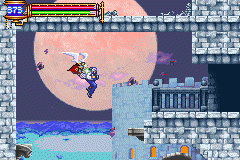
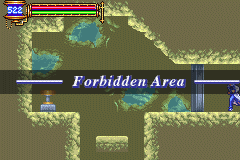

|
Story
Story Begin
ในปี ค.ศ.2035 ประเทศญี่ปุ่น กำลังจะเกิดสุริยคราสครั้งใหญ่ที่สุดในรอบ 25
ศตวรรษ
ตัวละครเอกคือ Soma Cruz ซึ่งเป็นนักเรียนแลกเปลี่ยนได้มาที่ประเทศญี่ปุ่น
และไปดูสุริยคราสครั้งนี้ด้วย พร้อมกับเพื่อนของเขา คือ Mina Hakuba
* Note : ในการเล่นควรดูแผนที่ประกอบด้วย
ดูแผนที่แบบละเอียดได้จากที่นี่ Map
(Map นี้ Link ไปยัง Gamefaqs)
(หากดูแผนที่จาก Gamefaqs ไม่ได้ให้ดูที่นี่ Map)
Start
Soma ถูกกลุ่มปีศาจรุมทำร้าย แต่ Genya Arikado มาช่วยไว้ได้
แต่ Mina ถูกปีศาจทำร้าย
ส่วน Soma เมื่อเอามีดฟันปีศาจ เขากลับได้รับพลังของปีศาจตนนั้นมาใช้
Arikado จึงบอกให้ Soma เข้าไปในปราสาท เพื่อที่เขาจะได้ทราบความจริง
และเขาจะดูแล Mina ไว้ให้ โดยกางม่านพลัง ป้องกันปีศาจไว้ให้
Castle Corridor
เริ่มต้นจะเจอ Zombie หากฆ่ามันได้มีด Baselard
จะช่วยให้เล่นได้ง่ายมากขึ้น
ช่วงนี้จะได้โซล Grave Keeper ซึ่งเป็นโซลประเภท Abilitly
ทำให้เมื่อกด "L" จะ Dash ถอยหลังได้
เมื่อไปต่อด้านขวาจะเจอ Boss : Creaking
Skull
NO. 034
HP 240
Tolerance: Dark
Weakness: Light
EXP: 110
Drop: ---
เมื่อปราบได้ ด้านล่างซ้ายจะมีกำแพงลับ สามารถใช้อาวุธทำลายได้ (WallSecret01)
เดินไปด้านขวาจะได้โซล Flying Armor
เป็นโซลสีฟ้า
กดสวมใส่แล้วเมื่อต้องการใช้กดปุ่ม "R"
กลับไปยังทางที่ขาดด้านบน แล้วกดใช้โซล Flying Aromr
จะช่วยให้ลอยตัวอยู่กลางอากาศได้นานขึ้น ทำให้กระโดดได้ไกลมากขึ้น

เมื่อเดินผ่านไปจะเจอชายคนหนึ่ง เขาชื่อ Graham Jones
เขารู้เรื่องราวเกี่ยวกับ Dracula และปราสาทหลังนี้เป็นอย่างดี
Chapel

บริเวณนี้หากเจอศัตรูชื่อ Rock Armor
หากโชคดีเมื่อฆ่ามันได้จะได้รับอาวุธ Hammer
เป็นค้อน พลังโจมตีสูง แต่ใช้ค่อนข้างยาก
ด้านล่างจะเจอ Boss : Manticore
NO. 055
HP 440
Weakness: Weapon, Animal, Rock
EXP: 250
Drop: --- : Gladius
เมื่อปราบได้ ด้านบนจะมีห้องที่มีทางลับอยู่ด้านบนของกำแพง (WallSecret02)
Study

ในนี้จะเจอกับผู้หญิงคนหนึ่ง เธอชื่อ Yoko Belnades
เธอรู้จักกับ Genya Arikado และบอกให้ Soma ระวังตัวจาก Graham Jones
เธอเก็บงำความลับบางอย่างเอาไว้
ทางด้านซ้ายของแผนที่จะมีกำแพงลับอยู่ด้านซ้าย (WallSecret03)
ลงมาด้านล่าง สุดทางขวาจะมีทางที่มีหน้าปีศาจเฝ้าอยู่
ให้หันหลังให้มันแล้ว Dash ถอยหลังจะเข้าไปได้ (WallSecretA)
ส่วนด้านซ้ายจะเจอ Boss : Great Armor
NO. 061
HP 650
Weakness: Lightning
EXP: 300
Drop: Iron Plate, Great Sword
เมื่อปราบได้ห้องด้านซ้ายจะเจอชายคนหนึ่ง เขาชื่อ Hammer
เขาเปิดร้านขายของ (Shop) อยู่ด้านหน้าของปราสาท
และในห้องนั้นจะมีโซล Malphas เป็นโซลประเภท
Ability
ทำให้สามารถกระโดดได้สองจังหวะ (Double Jump)
Chapel
จากนั้นกลับขึ้นไปด้านบนตรงที่กระโดดไม่ถึง
คราวนี้ให้ Double Jump และใช้โซล Flying Armor ช่วย จะกระโดดไปถึง
จะเจอห้องวาร์ป ซึ่งสามารถวาร์ปไปยังห้องวาร์ปอื่นๆ ได้
ตอนนี้จะมีเพียงห้องเดียวที่สามารถวาร์ปไปได้ จะไปโผล่บริเวณหน้าปราสาท
Castle Corridor
กลับไปด้านหน้าปราสาท จะเจอกับ Hammer เปิด Shop ขายของ
ให้ซื้อ CASTLE MAP 2 มาด้วย
และหากคุยกับ Mina เธอจะมีคำแนะนำที่ Arikado ฝากมาบอกด้วย
จากนั้นให้ปีนขึ้นไปด้านบน จะเจอโซนใหม่ (Zone)
Dance Hall
เมื่อเข้ามาจะพบชายคนหนึ่ง เขาความทรงจำเสื่อม
จำได้แต่เพียงว่า มีคนเรียกเขาว่า J
เขาบอกว่าเขาประสบอุบัติเหตุในปี ค.ศ.1999
และเขามายังปราสาทนี้เพื่อค้นหาความทรงจำของเขาคืนมา
จากนั้นไปด้านซ้ายของส่วนนี้ บริเวณกำแพงด้านซ้ายสุดจะมีทางลับ (WallSecret04)
ลงไปด้านล่างสุดจะเจอ Boss : Big Golem
NO. 070
HP 1,200
EXP: 1,000
Drop: Milican's Sword
เมื่อปราบได้ ห้องด้านซ้ายจะมีโซล Skeleton Blaze
เป็นโซลประเภท Ability
ทำให้สามารถ "สไลด์" (Slide) ได้
ในระหว่างนี้หากได้โซลของ Killer Doll มา จะช่วยให้เล่นได้ง่ายขึ้น
(โซล Killer Doll ใช้ล่อความสนใจของศัตรู)
กลับขึ้นไปด้านขวา จะมีทางแคบๆ ให้ Slide ผ่านไป
กำแพงด้านบนจะมีทางลับ (WallSecret05)
แต่ยังไม่สามารถขึ้นไปได้ในตอนนี้
Inner Quarters
จะมีกำแพงทางลับด้านล่าง (WallSecret06)
และมีลงไปจะมีกำแพงทางลับด้านขวาอีก (WallSecret07)
ด้านซ้ายจะมีห้องที่มีกระต่าย (Chronomage) ใช้นาฬิกาหยุดเวลา ทำให้ไม่สามารถผ่านได้
(WallSecretB)
ด้านขวาจะเจอ Boss : Headhunter
NO. 107
HP 700
Tolerance: Dark
Weakness: Weapon
EXP: 3,000
Drop: ---
ซึ่งจะมี 3 ร่าง (3 หัว)
เมื่อปราบได้ขึ้นไปด้านบนจะได้โซล Undine
เป็นโซลสีเหลือง ทำให้เดินบนน้ำได้
จากนั้นกลับไป Castle Corridor
Castle Corridor
ด้านขวาสุด (บริเวณที่ได้โซล Flying Armor) จะมีทางไปต่อได้
โดยต้องใช้โซล Undine ทำให้เดินบนน้ำได้
เมื่อขึ้นไปด้านบนจะพบ Zone ใหม่
Floating Garden
พื้นที่ใน Zone นี้จะเป็นเขาวงกต หากเดินแบบสุ่มสี่สุ่มห้า จะหลงอยู่ในพื้นที่นี้ได้
ให้เข้าไปยังห้องด้านซ้ายบน และเดินไปทางซ้ายเรื่อยๆ จะเจอ Zone ใหม่
Clock Tower
เมื่อเข้ามาจะพบกับ Graham อีกครั้ง เขาบอกว่าเขาเกิดในวันเดียวกันกับที่
Dracula ตาย
ดังนั้นแล้วเขาก็คือ Dracula ที่กลับชาติมาเกิด
และเขาจะไปยังบัลลังก์ของ Dracula เพื่อดูดซับพลังของ Dracula จากปราสาทหลังนี้
จากนั้นไปด้านซ้าย กำแพงด้านซ้ายสุดจะมีทางลับ (SecretWall08)
เดินไปสักครู่จะเจอกับ Yoko อีกครั้งหนึ่ง
เธอบอกว่าต้องหาทางหยุด Graham ให้ได้แล้วก็เดินจากไป
ด้านบนสุดจะเจอกับ Boss : Death
NO. 108
HP 4,444
Tolerance: Dark
EXP: 4444
Drop: ---
Death จะมี 2 ร่าง
เมื่อปราบ Death ได้ ห้องด้านซ้ายจะมีโซล Skula
เป็นโซลสีฟ้า ใช้ดำน้ำได้
กลับไปยัง Castle Corridor ลงไปด้านล่างจะเจอ Zone ใหม่
Underground Reservoir
ลงไปด้านล่างสุด กำแพงด้านซ้ายจะมีทางลับ (WallSecret09)
หากไปด้านซ้ายจะพบ Yoko โดน Graham ทำร้ายบาดเจ็บสาหัส
แต่ Arikado จะมาช่วยไว้ แล้ววาร์ป Yoko ไปอยู่กับ Mina
จากนั้นไปด้านขวาจะพบ Zone ใหม่
Underground Cemetery
ไปด้านขวาจะเจอ Boss : Legion
NO. 109
HP 5,000
Tolerance: Dark
Weakness: Light
EXP: 12,000
Drop: ---
ไปต่อด้านขวาจะได้โซล Galamoth เป็นโซล
Ability ทำให้ไม่ถูกเปลี่ยนแปลงเวลา
(นำไปใช้กับกระต่าย Chronomage)
เดินกลับไปด้านซ้ายสุดจะเจอ Zone ใหม่
The Arena
เดินลงไปด้านล่างจะเจอลิฟต์มี 3 ชั้น
ชั้นบน ตีลูกเหล็กให้เด้งไปทางขวาชนกำแพงจะไปต่อ (WallSecretC)
ชั้นกลางไปสุดทางจะเจอดาบ Balmung (ดีที่สุดในตอนนี้)
ชั้นล่างต้องขึ้นแท่นเลื่อนและต้องกดปุ่มทิศทางตามลูกศรจึงจะผ่านได้ (WallSecretD)
ส่วนด้านซ้ายจะเจอ Boss : Balore
NO. 110
HP 4,000
EXP: 16,000
Drop: ---
เมื่อปราบได้ ห้องด้านซ้ายจะได้โซล Giant Bat
เป็นโซลสีฟ้า ใช้แปลงร่างเป็นค้างคาว
เมื่อกลับออกมาจะพบกับ J
ความทรงจำของเขากลับมาแล้ว ชื่อจริงของเขาคือ Julius Belmont
เขาเป็นคนปราบ Dracula ในปี ค.ศ.1,999
และได้ปิดผนึกปราสาท Dracula ไว้ด้านหลังของ สุริยคลาส
ซึ่งการต่อสู้ครั้งนั้น ทำให้เขาสูญเสียความทรงจำ
Soma บอกว่า Graham เป็น Dracula และต้องกำจัดทิ้ง
แต่ Julius บอกว่าเขาต้องค้นหาอาวุธคู่กายก่อน นั่นก็คือ แส้ศักดิ์สิทธิ์ประจำตระกูล
Belmont
เมื่อสามารถแปลงร่างเป็นค้างคาวได้แล้ว จะสามารถไปได้แทบทุกแห่งของปราสาท
ให้กลับไปสำรวจปราสาท และเก็บ Item ที่ยังไม่ได้เก็บให้หมด
Chronomage
ในตอนนี้หากกลับไปหา Chronomage จะไม่สามารถหยุดเวลาเราได้แล้ว
หากฆ่ามันแล้วได้ โซล Chronomage จะสามารถหยุดเวลาได้
Sky Fish
หากลงไปด้านล่างๆ ของปราสาท บริเวณห้องวาร์ปอันล่างสุด
บางครั้งจะเจอแสงพุ่งผ่านไป
หากใช้โซล Chronomage หยุดเวลา จะทำให้แสงนั้นช้าลง
จะทำให้ทราบว่า แท้จริงแล้วแสงนันคือก็คือ Sky Fish นั่นเอง
Water Fall
หากเก็บโซล Curly หรือ Devil หรือ Manticore ที่ทำให้สามารถแปลงร่างได้
ให้ไปที่น้ำตกบริเวณด้านล่างของแผนที่
และให้สวมใส่โซล Undine ด้วย (ทำให้ลอยน้ำ) เสร็จแล้วถอยมาตั้งหลักไกลๆ
แล้วกดใช้โซล "แปลงร่าง" พุ่งเข้าไป จะสามารถผ่านน้ำตกไปได้ (WallSecretE)
เมื่อผ่านไปได้จะเจอ Zone ใหม่
Forbidden Area

Zone นี้บริเวณกำแพงด้านซ้ายของจุดเรือล่ม จะมีกำแพงทางลับ (WallSecret10)
ตรงจุดนี้จะได้ดาบที่ดีกว่าดาบ Balmung นั่นก็คือดาบ Chaimh
Solais
และในส่วนด้านบนเหนือน้ำตกไป จะมีกำแพงทางลับอีกแห่งหนึ่ง (WallSecret11)
จากนั้นเมื่อเก็บ Item และสำรวจปราสาทหมดแล้วให้ไปด้านบนสุดของปราสาท
Top Floor
ใน Zone นี้ ด้านซ้ายสุดตรงข้ามห้องวาร์ปจะมีกำแพงทางลับด้านบนเพดาน (WallSecret12)
และด้านบน บริเวณห้องที่มี Iron Golem กำแพงด้านขวาก็มีทางลับ (WallSecret13)
ส่วนใต้ห้อง Save หากตีลูกตุ้มให้ไปกระแทกกำแพงจะผ่านไปได้ (WallSecretF)
ส่วนบนสุดจะเจอ Boss : Graham
NO. 112
HP 5,000
Tolerence: Poison, Animal, Rock
EXP: 0
Drop: ---
Graham จะมี 2 ร่าง
เมื่อปราบได้จะพบฉากจบ (Normal Ending)
แต่ Soma กลับรู้สึกว่า ปราสาทยังร้องเรียกเขาอยู่ ???
* Note : หากแพ้ Graham ในร่างแรก จะเจอฉากจบอีกแบบหนึ่ง
New Play
เล่นใหม่อีกครั้ง แต่คราวนี้ให้สวมใส่โซลดังนี้
สีแดง : Flame Demon (พ่นลูกไฟ 3 ลูก)
สีฟ้า : Giant Bat (แปลงร่างเป็นค้างคาว)
สีเหลือง : Succubus (เพิ่ม HP +5 เมื่อโจมตี)
ซึ่งโซล 3 ชนิดนี้จะมีพลังคล้ายกับ Dracula มาก
ให้ไปสู้กับ Graham อีกครั้ง
เมื่อชนะ Soma จะพบว่า พลังของ Dracula ได้หลั่งไหลมาสู่ร่างกายเขา
แล้ว Genya Arikado ได้บอกให้ Soma ไปค้นหาแหล่งพลังของปราสาท
เพื่อทำลายมัน มิฉะนั้นแล้ว พลังของ Dracula จะหลั่งไหลเข้าสู่ร่างกายของ
Soma
จะทำให้ Soma กลายเป็น Dracula เต็มตัว
จากนั้นไปด้านซ้ายจะมีโซล Black Panther
เป็นโซลสีฟ้า ทำให้ Dash ได้
คราวนี้ให้กลับไปยัง Floating Gardens ไปที่ประตูดำ ซึ่งตอนนี้เปิดแล้ว
Floating Gardens
ภายในประตูดำจะพบกับ Julius แต่ในคราวนี้ฐานะของ Soma เปลี่ยนไป
Julius มีฐานะเป็น Vampire Hunter จึงต้องฆ่า Soma ที่เป็น Dracula
Boss : Belmont
NO. 111
HP 6,000
Tolerence: Light, Poison, Animal, Rock
EXP: 0
Drop: ---
เมื่อชนะ Soma ถาม Julius ว่าทำไมไม่สู้อย่างเต็มที่
Julius บอกว่าเขาสัมผัสได้ถึงวิญญาณบริสุทธิ์ในตัวของ Soma
เขาเห็นถึงความเป็นมนุษย์ในตัว Soma จึงทำให้เกิดความลังเลในขณะต่อสู้
Soma บอกกับ Julius ว่า เขาต้องการยุติความวุ่นวายนี้
แต่หากเขาทำไม่สำเร็จ และกลายเป็น Dracula เต็มตัว ให้ Julius ฆ่าเขาซะ
จากนั้นไปด้านซ้ายจะเจอทางวาร์ป
Chaotic Realm
ภายใน Chaotic Realm จะไม่สามารถกด Select ดูแผนที่ได้
เมื่อเข้าไปภายในสุด Soma จะบ่นว่า ลำพังเขาเพียงคนเดียวคงทำไม่สำเร็จแน่
แต่กลับมีเสียงของ Mina, Yoko, Hammer, Julius, Arikado มาให้กำลังใจ
และบอกว่าทุกคนรู้หมดแล้วว่า Soma มีพลังของ Dracula
แต่พวกเขาก็ไม่รังเกียจ และคอยเอาใจช่วย Soma
เมื่อวาร์ปไปจะเจอ Boss : Chaos
ซึ่งมี 2 ร่าง
ร่างแรกมันจะดูดโซลของเราไปทั้งหมดไม่สามารถใช้โซลได้
ร่างสอง หมอบอยู่ตามภาพ แล้วฟันไปเรื่อยๆ ก็จะชนะง่ายๆ
หากปราบได้จะพบฉากจบแบบ Good (Good Ending)
* Note : หากปราบ Chaos ได้ และมี Soul ครบ จะเจอฉากจบที่แตกต่างกัน
(All Soul Ending)
* Note : หากแพ้ Chaos ในร่างสอง จะพบฉากจบอีกแบบหนึ่ง (Bad
Ending)
|

{kind=link}